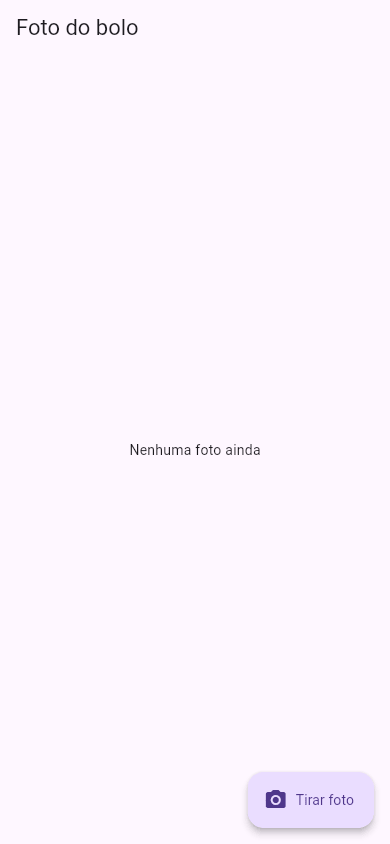
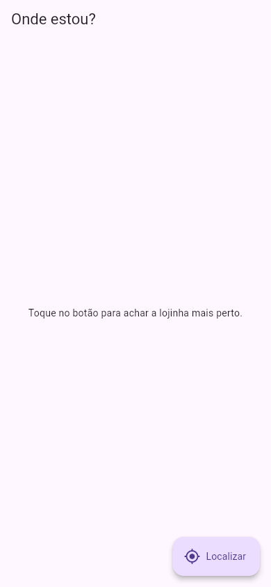

Flutter Recursos do Aparelho
Um celular é cheio de sensores e peças: câmera, GPS, microfone, vibração, galeria de fotos. O Flutter, sozinho, só desenha a tela; para falar com essas peças, ele usa plugins, pacotes do pub.dev que têm, por dentro, um pedaço escrito na língua de cada sistema (Kotlin/Java no Android, Swift no iOS, JavaScript na web). Você chama uma função em Dart, e o plugin conversa com o aparelho. Esta aula mostra os dois mais pedidos, a câmera e a localização, e o assunto que vem junto com eles: as permissões.
O laboratório do guia não tem câmera nem GPS: ele roda o app num navegador, num servidor. Por isso, as telas iniciais abaixo foram compiladas e fotografadas de verdade, mas o que acontece depois do toque (a câmera abrindo, o pedido de permissão, a posição aparecendo) é descrito a partir da documentação oficial dos pacotes, sem saída real do lab. Rode no seu celular para ver.
- O que é um plugin e por que ele precisa de configuração em cada plataforma.
- A tirar uma foto (ou escolher da galeria) com o
image_picker. - A pegar a localização com o
geolocator, pedindo permissão do jeito certo. - Onde declarar as permissões:
AndroidManifest.xml(Android) eInfo.plist(iOS). - Por que tudo aqui é
async/await, e o que fazer quando a pessoa cancela ou nega.
Versões desta aula (as mais novas no pub.dev em outubro de 2026): image_picker 1.2.4, geolocator 14.1.2, com o Flutter 3.47.7 do lab.
A ideia: o intérprete
A Ana fala português; o celular "fala" Kotlin (Android) ou Swift (iOS). O plugin é o intérprete no meio: ela pede "tire uma foto" em Dart, ele traduz para a língua do aparelho, o aparelho abre a câmera, e o intérprete devolve a foto em Dart. Dois detalhes vêm dessa ideia:
- O pedido demora: a pessoa ainda vai apontar a câmera e apertar o botão. Por isso as funções devolvem
Futuree se usaawait(veja FutureBuilder). - O sistema do aparelho protege a privacidade: câmera e localização exigem permissão. O app tem de declarar, nos arquivos de cada plataforma, que vai usar o recurso (e por quê), e a pessoa tem de aceitar na hora.
1. Instalar os plugins
Os dois de uma vez, no terminal da Ana:
$ flutter pub add image_picker geolocator Resolving dependencies... Downloading packages... + args 2.7.0 + cross_file 0.3.5+5 (0.4.0 available) … + geolocator 14.1.2 + geolocator_android 5.2.1 + geolocator_apple 2.4.2 + geolocator_linux 0.2.6 + geolocator_platform_interface 4.4.1 + geolocator_web 4.1.4 + geolocator_windows 0.2.5 … + image_picker 1.2.4 + image_picker_android 0.8.13+25 + image_picker_for_web 3.1.1 + image_picker_ios 0.8.13+12 + image_picker_linux 0.2.2 + image_picker_macos 0.2.2+1 + image_picker_platform_interface 2.11.2 + image_picker_windows 0.2.2 … Changed 43 dependencies! 9 packages have newer versions incompatible with dependency constraints. Try `flutter pub outdated` for more information.
43 pacotes para dois plugins! Repare nos nomes: cada plugin vem em pedaços, um por plataforma (geolocator_android, geolocator_apple, geolocator_web…), mais uma "interface comum" (…_platform_interface) que o seu código Dart enxerga. É o "intérprete" para cada língua. Você só importa o pacote principal; o Flutter escolhe o pedaço certo na hora de compilar.
Um plugin traz código nativo, que só entra no app numa compilação nova. Um hot reload (nem um hot restart) não basta: pare o flutter run e rode de novo. Sem isso, a chamada costuma falhar com uma MissingPluginException.
2. A câmera: image_picker
O app de receitas da Ana vai ter a foto de cada bolo. Com o image_picker, o app abre a câmera do próprio sistema (ou a galeria), e a pessoa tira a foto lá; o app recebe o arquivo pronto.
import 'dart:typed_data';
import 'package:flutter/material.dart';
import 'package:image_picker/image_picker.dart';
void main() => runApp(const MaterialApp(
debugShowCheckedModeBanner: false,
home: TelaFotoReceita(),
));
class TelaFotoReceita extends StatefulWidget {
const TelaFotoReceita({super.key});
@override
State<TelaFotoReceita> createState() => _TelaFotoReceitaState();
}
class _TelaFotoReceitaState extends State<TelaFotoReceita> {
final _picker = ImagePicker();
Uint8List? _foto;
Future<void> _tirarFoto() async {
final arquivo = await _picker.pickImage(source: ImageSource.camera);
if (arquivo == null) return; // a pessoa cancelou
final bytes = await arquivo.readAsBytes();
setState(() => _foto = bytes);
}
@override
Widget build(BuildContext context) {
return Scaffold(
appBar: AppBar(title: const Text('Foto do bolo')),
body: Center(
child: _foto == null
? const Text('Nenhuma foto ainda')
: Image.memory(_foto!, height: 300),
),
floatingActionButton: FloatingActionButton.extended(
onPressed: _tirarFoto,
icon: const Icon(Icons.photo_camera),
label: const Text('Tirar foto'),
),
);
}
}
- final _picker = ImagePicker()
- O "intérprete" da câmera.
- Uint8List? _foto
- A foto, em bytes (
Uint8List, dodart:typed_data). Começanull: ainda não há foto. - Future<void> _tirarFoto() async
- Uma função assíncrona: ela vai esperar a pessoa.
- await _picker.pickImage(source: ImageSource.camera)
- Abre a câmera e espera. Com
ImageSource.gallery, abre a galeria. Devolve umXFile?. - if (arquivo == null) return
- Se a pessoa cancelou (voltou sem tirar foto), vem
null. Sempre trate esse caso. - await arquivo.readAsBytes()
- Lê a foto. Usar os bytes com
Image.memoryfunciona em todas as plataformas, inclusive na web (onde não existe "arquivo" no disco). - setState(() => _foto = bytes)
- Guarda e redesenha a tela, que agora mostra a foto.
A tela ao abrir, compilada e fotografada no lab:

Ilustrativo (sem saída do lab): no celular, o toque em "Tirar foto" abre o app de câmera do sistema; depois de tirar e confirmar, o app volta e a foto aparece no lugar do texto "Nenhuma foto ainda". Na primeira vez, o iOS pergunta se o app pode usar a câmera, mostrando o texto que você escreveu no Info.plist (seção 4).
3. A localização: geolocator
Para mostrar a lojinha mais perto, o app precisa de onde a pessoa está. A localização é mais delicada que a câmera: o app tem de conferir se o GPS está ligado e pedir a permissão, antes de perguntar a posição.
import 'package:flutter/material.dart';
import 'package:geolocator/geolocator.dart';
void main() => runApp(const MaterialApp(
debugShowCheckedModeBanner: false,
home: TelaOndeEstou(),
));
class TelaOndeEstou extends StatefulWidget {
const TelaOndeEstou({super.key});
@override
State<TelaOndeEstou> createState() => _TelaOndeEstouState();
}
class _TelaOndeEstouState extends State<TelaOndeEstou> {
String _texto = 'Toque no botão para achar a lojinha mais perto.';
Future<void> _localizar() async {
if (!await Geolocator.isLocationServiceEnabled()) {
setState(() => _texto = 'O GPS do aparelho está desligado.');
return;
}
var permissao = await Geolocator.checkPermission();
if (permissao == LocationPermission.denied) {
permissao = await Geolocator.requestPermission();
}
if (permissao == LocationPermission.denied ||
permissao == LocationPermission.deniedForever) {
setState(() => _texto = 'Sem permissão de localização.');
return;
}
final posicao = await Geolocator.getCurrentPosition();
setState(() => _texto =
'Você está em ${posicao.latitude.toStringAsFixed(4)}, '
'${posicao.longitude.toStringAsFixed(4)}');
}
@override
Widget build(BuildContext context) {
return Scaffold(
appBar: AppBar(title: const Text('Onde estou?')),
body: Center(
child: Padding(
padding: const EdgeInsets.all(24),
child: Text(_texto, textAlign: TextAlign.center),
),
),
floatingActionButton: FloatingActionButton.extended(
onPressed: _localizar,
icon: const Icon(Icons.my_location),
label: const Text('Localizar'),
),
);
}
}
- Geolocator.isLocationServiceEnabled()
- O GPS (o "serviço de localização") do aparelho está ligado? Se a pessoa o desligou nas configurações, não adianta pedir posição.
- Geolocator.checkPermission()
- Qual é a permissão atual do app? Devolve um
LocationPermission:denied(negada, ainda dá para pedir),deniedForever(negada para sempre),whileInUse(enquanto o app está aberto) oualways(sempre). - Geolocator.requestPermission()
- Mostra a janelinha do sistema: "Permitir que o app acesse a localização?". Devolve a resposta.
- deniedForever
- A pessoa marcou "não perguntar de novo" (ou negou duas vezes, no Android). O app não pode mais perguntar; só ela, nas configurações do aparelho. O plugin tem
Geolocator.openAppSettings()para abrir essa tela. - Geolocator.getCurrentPosition()
- A posição atual: um
Positioncomlatitude,longitude,accuracy(precisão, em metros) e outros. - toStringAsFixed(4)
- 4 casas decimais: cerca de 10 metros de precisão no mapa. Suficiente para "a lojinha mais perto".
A tela ao abrir, compilada e fotografada no lab:

Ilustrativo: no celular, o toque em "Localizar" mostra o pedido de permissão do sistema; aceitando, o texto troca para algo como Você está em -23.5505, -46.6333 (números de exemplo, não colhidos no lab). Negando, aparece Sem permissão de localização..
4. As permissões em cada plataforma
Além do pedido na hora, o app precisa declarar o uso em arquivos de configuração. Sem isso, o sistema bloqueia o recurso (e, no iOS, fecha o app). Os textos abaixo seguem o Readme de cada pacote.
Android: android/app/src/main/AndroidManifest.xml
<manifest xmlns:android="http://schemas.android.com/apk/res/android">
<uses-permission android:name="android.permission.ACCESS_FINE_LOCATION" />
<uses-permission android:name="android.permission.ACCESS_COARSE_LOCATION" />
<application …>
- ACCESS_FINE_LOCATION
- Localização precisa (GPS).
- ACCESS_COARSE_LOCATION
- Localização aproximada (antenas e Wi-Fi).
As linhas uses-permission vão dentro de <manifest>, antes de <application>. Para a câmera do image_picker, o Android não pede linha nenhuma: ele usa o app de câmera do próprio sistema.
iOS: ios/Runner/Info.plist
<key>NSCameraUsageDescription</key> <string>Para fotografar as suas receitas.</string> <key>NSPhotoLibraryUsageDescription</key> <string>Para escolher a foto da receita na galeria.</string> <key>NSLocationWhenInUseUsageDescription</key> <string>Para mostrar a lojinha mais perto de você.</string>
No iOS, cada recurso tem uma "chave" com um texto explicando o porquê. É esse texto que aparece na janelinha de permissão, então escreva em português, para a pessoa entender. A Apple recusa na loja apps com textos vagos (veja Publicando nas Lojas).
| Recurso | Plugin comum | Android | iOS (Info.plist) |
|---|---|---|---|
| Câmera / galeria | image_picker | nada | NSCameraUsageDescription, NSPhotoLibraryUsageDescription |
| Câmera com preview dentro do app | camera | conforme o Readme | NSCameraUsageDescription, NSMicrophoneUsageDescription |
| Localização | geolocator | ACCESS_FINE_LOCATION, ACCESS_COARSE_LOCATION | NSLocationWhenInUseUsageDescription |
| Abrir site, telefone, e-mail | url_launcher | conforme o Readme | conforme o Readme |
Cada plugin tem a sua lista no Readme do pub.dev. Leia antes de instalar: é ali que está o que muda em cada plataforma.
Formas diferentes de fazer
| Você quer… | Use |
|---|---|
| Uma foto, com a câmera do sistema (o mais simples) | image_picker, ImageSource.camera |
| Escolher uma ou várias fotos da galeria | image_picker: pickImage(source: ImageSource.gallery) ou pickMultiImage() |
| A imagem da câmera dentro do seu app (filtros, leitor de código) | camera (mais controle, mais trabalho) |
| A posição uma vez | Geolocator.getCurrentPosition() |
| Acompanhar a pessoa andando | Geolocator.getPositionStream(), um Stream (veja StreamBuilder) |
Quando dá errado
Os casos abaixo são os problemas mais citados na documentação dos pacotes. Como o lab não tem aparelho, as mensagens não foram colhidas aqui; o nome de cada erro é o que você vai procurar no console.
MissingPluginException
Você instalou o plugin e deu hot reload. O código Dart novo entrou, mas o pedaço nativo do plugin não. Como consertar: pare o app e rode flutter run de novo (às vezes, flutter clean antes).
Faltou a chave NSCameraUsageDescription no Info.plist. O iOS fecha na hora qualquer app que acessa a câmera sem ter declarado o motivo. Como consertar: acrescente a chave e o texto (seção 4) e rode de novo.
Ou faltam as linhas no AndroidManifest.xml/Info.plist, ou a pessoa negou para sempre (deniedForever). No segundo caso, o app não consegue mais perguntar: explique na tela e ofereça um botão com Geolocator.openAppSettings().
null
Se a pessoa cancelar a câmera, pickImage devolve null. Um arquivo!.readAsBytes() (com !) faz a função parar com um erro no meio. Como isso acontece dentro de um onPressed, e não no build, não aparece a tela vermelha: o erro vai para o console e a tela fica parada no estado anterior (a missão abaixo mostra o caso, com uma câmera de mentira: no lab, a tela ficou em Abrindo a câmera...). Como consertar: if (arquivo == null) return;, como no exemplo.
Referência rápida
| Escrita | O que faz |
|---|---|
flutter pub add image_picker geolocator | Instala os plugins (depois, rode o app do zero) |
await ImagePicker().pickImage(source: ImageSource.camera) | Abre a câmera; devolve XFile? (null = cancelou) |
await arquivo.readAsBytes() + Image.memory(bytes) | Mostra a foto |
Geolocator.isLocationServiceEnabled() | O GPS está ligado? |
Geolocator.checkPermission() / requestPermission() | Confere / pede a permissão |
Geolocator.getCurrentPosition() | A posição (latitude, longitude) |
AndroidManifest.xml: <uses-permission …> | Declara a permissão no Android |
Info.plist: NS…UsageDescription | Declara e explica a permissão no iOS |
Exercícios
1. A pessoa abriu a câmera pelo app e voltou sem tirar foto. O que o pickImage devolve?
2. Onde se declara, no iOS, o texto que explica por que o app quer a localização?
3. Você instalou um plugin, deu hot reload e veio MissingPluginException. O que fazer?
4. A permissão de localização veio deniedForever. O que o app pode fazer?
Missão final: quando a pessoa cancela
O editor do guia não tem câmera, então esta missão finge uma: a função fingirCamera() espera 1 segundo e devolve null, exatamente como o pickImage faz quando a pessoa cancela.
Missão: rode e toque em "Tirar foto": a tela mostra Abrindo a câmera... e fica nisso para sempre. Depois de 1 segundo, o arquivo! encontrou um null e a função parou com um erro (no console, não na tela: o erro aconteceu num onPressed, fora do build). Conserte o _tirarFoto: se arquivo == null, mostre Foto cancelada e saia com return; depois disso, o ! não é mais necessário. A foto mostra a tela depois do conserto.
import 'package:flutter/material.dart';
void main() => runApp(const MaterialApp(
debugShowCheckedModeBanner: false,
home: TelaFotoFingida(),
));
// Finge a câmera: espera 1 segundo e devolve null,
// como o pickImage faz quando a pessoa cancela.
Future<String?> fingirCamera() async {
await Future.delayed(const Duration(seconds: 1));
return null;
}
class TelaFotoFingida extends StatefulWidget {
const TelaFotoFingida({super.key});
@override
State<TelaFotoFingida> createState() => _TelaFotoFingidaState();
}
class _TelaFotoFingidaState extends State<TelaFotoFingida> {
String _texto = 'Nenhuma foto ainda';
Future<void> _tirarFoto() async {
setState(() => _texto = 'Abrindo a câmera...');
final arquivo = await fingirCamera();
setState(() => _texto = 'Foto recebida: ${arquivo!.length} letras');
}
@override
Widget build(BuildContext context) {
return Scaffold(
appBar: AppBar(title: const Text('Foto do bolo')),
body: Center(child: Text(_texto)),
floatingActionButton: FloatingActionButton.extended(
onPressed: _tirarFoto,
icon: const Icon(Icons.photo_camera),
label: const Text('Tirar foto'),
),
);
}
}
import 'package:flutter/material.dart';
void main() => runApp(const MaterialApp(
debugShowCheckedModeBanner: false,
home: TelaFotoFingida(),
));
// Finge a câmera: espera 1 segundo e devolve null,
// como o pickImage faz quando a pessoa cancela.
Future<String?> fingirCamera() async {
await Future.delayed(const Duration(seconds: 1));
return null;
}
class TelaFotoFingida extends StatefulWidget {
const TelaFotoFingida({super.key});
@override
State<TelaFotoFingida> createState() => _TelaFotoFingidaState();
}
class _TelaFotoFingidaState extends State<TelaFotoFingida> {
String _texto = 'Nenhuma foto ainda';
Future<void> _tirarFoto() async {
setState(() => _texto = 'Abrindo a câmera...');
final arquivo = await fingirCamera();
if (arquivo == null) {
setState(() => _texto = 'Foto cancelada');
return;
}
setState(() => _texto = 'Foto recebida: ${arquivo.length} letras');
}
@override
Widget build(BuildContext context) {
return Scaffold(
appBar: AppBar(title: const Text('Foto do bolo')),
body: Center(child: Text(_texto)),
floatingActionButton: FloatingActionButton.extended(
onPressed: _tirarFoto,
icon: const Icon(Icons.photo_camera),
label: const Text('Tirar foto'),
),
);
}
}
Resumo
- Recursos do aparelho entram por plugins: pacotes com um pedaço nativo para cada plataforma. Depois de instalar, rode o app do zero.
- Tudo é assíncrono (
await), e a pessoa pode cancelar (null) ou negar (permissão). - Câmera/galeria:
image_picker. Localização:geolocator, conferindo o serviço e a permissão antes de pedir a posição. - Permissões: declaradas no
AndroidManifest.xmle noInfo.plist(com um texto explicando o porquê) e pedidas na hora. - O Readme do pacote, no pub.dev, diz exatamente o que configurar em cada plataforma.